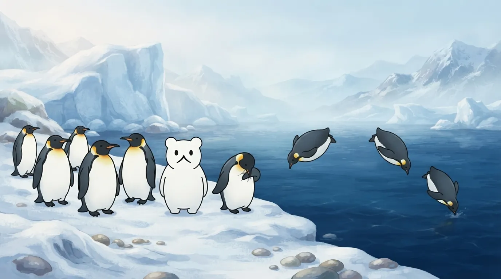
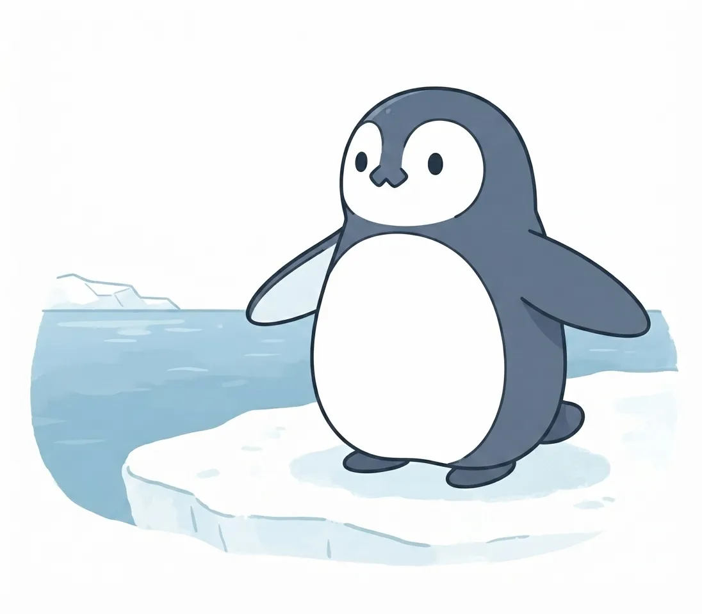
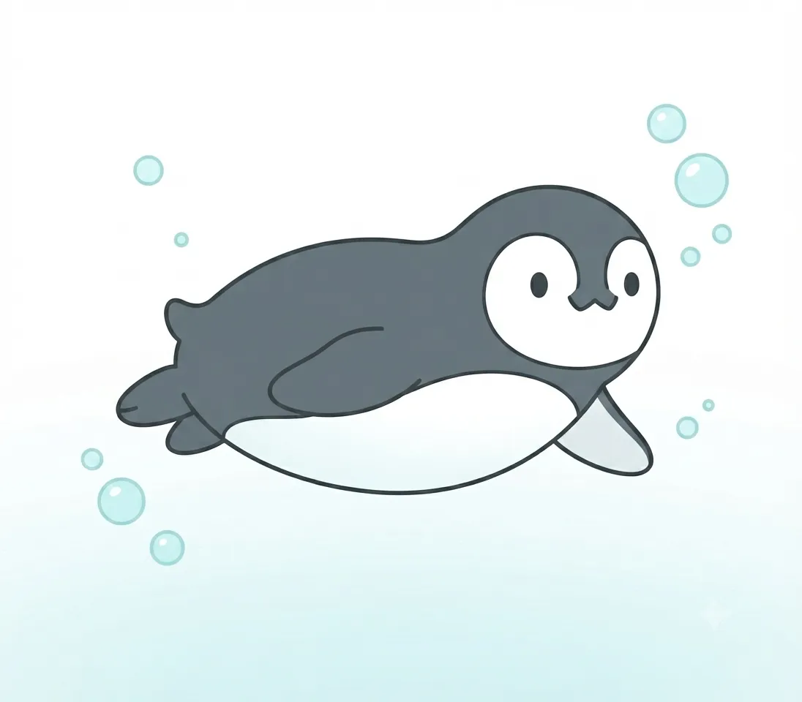
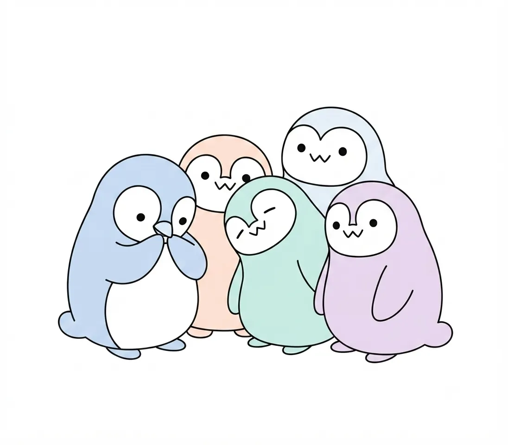
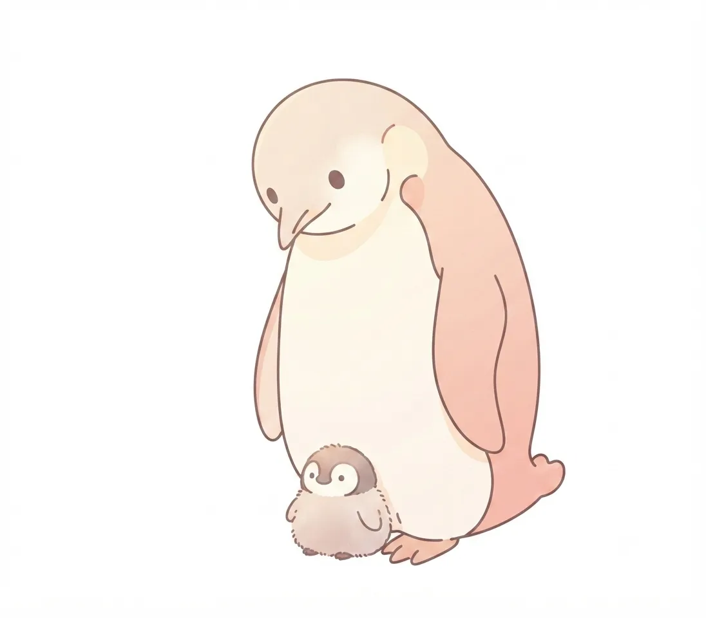

ペンギン
陸ではよちよち、海では飛ぶように。二つの顔を持つ鳥。
| 和名 | オウサマペンギン |
|---|---|
| 学名 | Aptenodytes patagonicus |
| 英名 | King penguin |
| 分類 | ペンギン目ペンギン科 |
| 分布 | 南極周辺の島々、亜南極圏 |
| 全長 | 85〜95cm |
| 体重 | 10〜16kg |
| 生態・特徴 | 群れで暮らす海鳥。胸から喉にかけての黄橙色の模様が特徴。深く潜水して魚やイカを捕らえる。 |
空を捨て、海を選んだ鳥
鳥でありながら空を飛ぶことをやめ、冷たい海の中へと活路を見いだしたペンギンたち。長い進化の歴史の中で、彼らは翼を頑丈なフリッパー（ヒレ）へと進化させ、広大な海洋世界を我が物として生きる道を選びました。
陸の上では少し不器用に、一歩一歩を確かめるように歩む姿が愛らしさを誘いますが、ひとたび水面に足を踏み入れると、その動きは一変します。重力から解放されたかのように水中を自在に駆け巡る姿は、まさに「海を飛ぶ鳥」そのものの気高さに満ちています。

泳ぐための体
水中での優れた機動力を支えているのは、流線型の美しいボディと驚異的な身体のしくみです。骨格は一般的な鳥類とは異なり、密度が高くずっしりと重く作られており、海中深くへ潜水する際の重りとしての役割を果たしています。
さらに、全身を覆う密度の高い羽毛は、冷たい海水を完全にシャットアウトすると同時に、羽毛の間に空気を閉じ込めることで優れた保温効果と浮力調整をもたらします。水流を巧みに読み取り、方向を自在に変えるための尾羽と足の働きも、彼らの泳ぎを支える大切な要素です。

仲間と暮らす
群れをなし、互いの存在を感じ合いながら暮らすこともペンギンたちの大きな特徴です。厳しい自然環境や外敵から身を守るため、彼らは固い絆で結ばれたコミュニティを形成し、日々の生活を共にしています。
陸上でのんびりと羽づくろいをしたり、順番に水へ飛び込んだりする群れの様子を見ていると、そこには穏やかで秩序ある時間が流れています。鳴き声でコミュニケーションを取り合う姿や、仲間同士で寄り添う様子からは、豊かな社会性と強い結びつきが伺えます。

子育ての季節
新しい命を迎える季節になると、ペンギンたちの暮らしは一段と緊密でドラマチックなものになります。カップルで協力しながら巣を作り、大切に卵を温め、孵化したヒナを懸命に育てる姿には、深い愛情と確かな絆が宿っています。
親鳥が交代で海へ狩りに出かけ、たくさんの獲物を持ち帰ってヒナに与える光景は、命をつなぐ営みの尊さを静かに伝えてくれます。やがて親と同じように海へと旅立つ準備を整えていくヒナたちの成長は、訪れる人々に大きな感動と温かな記憶を残してくれます。
